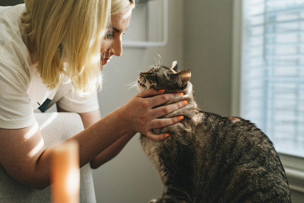
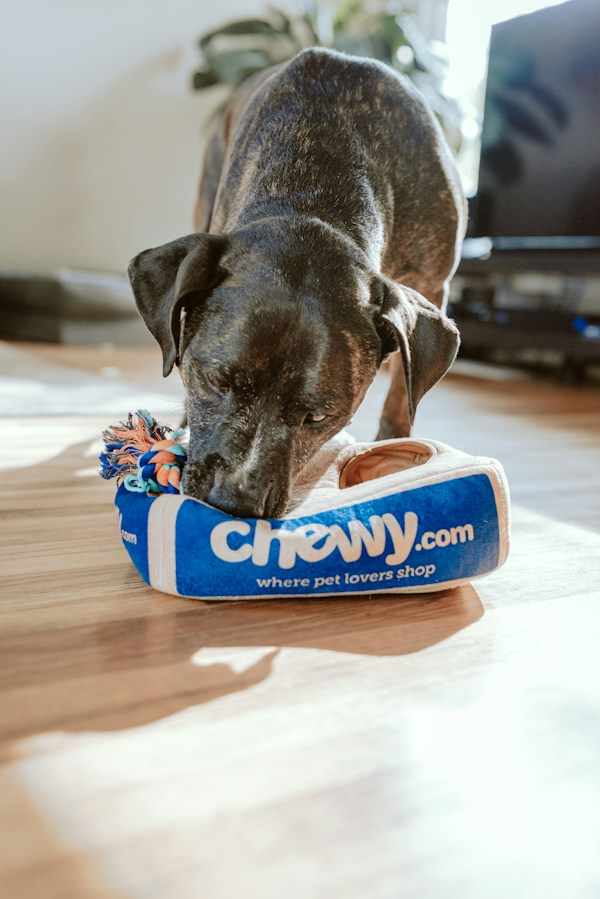
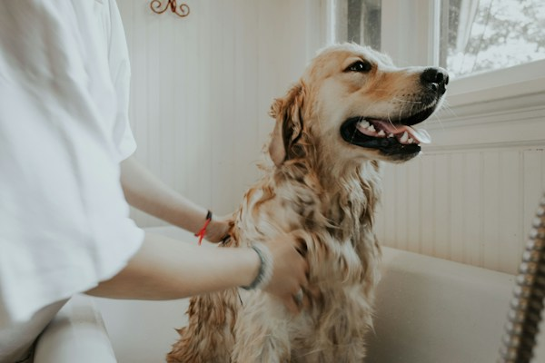
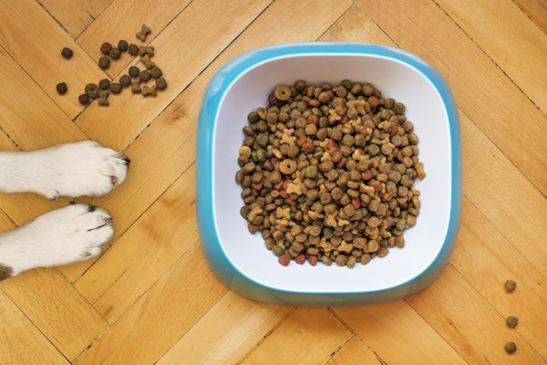
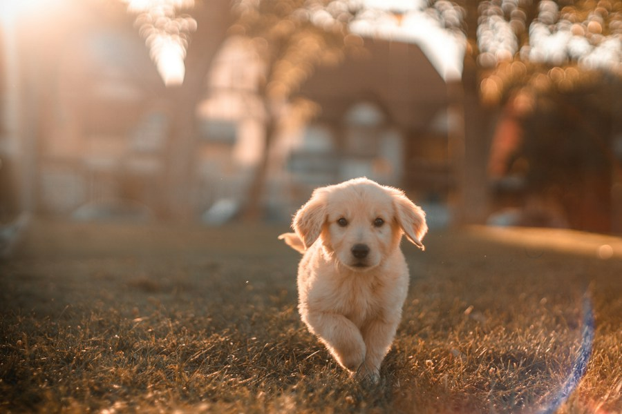

Consulta veterinaria
Revisión y diagnóstico para tu mascota.
Atención veterinaria, cuidado y bienestar para tus mascotas. Estamos para proteger la salud de tus mejores amigos.
Conoce nuestros servicios →
Revisión y diagnóstico para tu mascota.

Prevención de enfermedades animales.

Baño, limpieza y cuidado.

Productos para tus mascotas.
Veterinaria Quirquincho es un establecimiento dedicado al cuidado, protección y bienestar de los animales.
Conócenos →